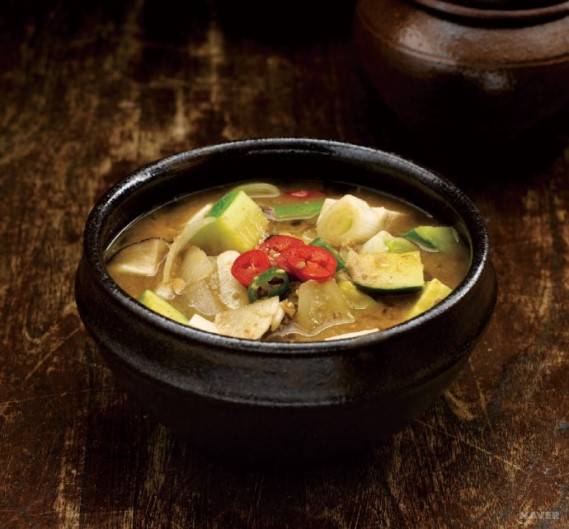

된장을 푼 물에 갖은 재료를 넣어 끓인 찌개로 토장찌개라고도 불린다. 된장은 한국의 전통 발효음식이며 콩으로 메주를 쑤어 말린 뒤 발효시킨 것을 뜻하는데, 주로 음식의 양념으로 쓰이는 식품이다. 그중 된장찌개는 한국 사람들이 즐겨 먹는 토착성이 짙은 음식으로, 된장만을 넣어 끓이기도 하고, 고추장이나 고춧가루를 첨가하여 매콤한 맛을 더하기도 한다. 계절에 맞춰 봄에는 냉이나 달래를 넣어 끓이기도 하고, 겨울에는 시래기를 데쳐 넣기도 한다. 찌개는 채소, 두부, 버섯, 해산물, 고기 등의 여러 가지 식품을 넣어 함께 끓여낸 것으로, 뚝배기에 담아 먹는 동안 따뜻하게 즐길 수 있다. 주재료에 따라 해산물된장찌개, 우렁된장찌개, 북어된장찌개, 두부된장찌개, 우거지된장찌개, 소고기된장찌개 등이 있으며, 기본적으로 우수한 단백질 공급원인 콩이 들어가 있기 때문에 다양한 영양소를 섭취하는 데 도움을 주는 식품이다.
